settings.jsonc#
Open the settings editor from a phone or laptop on the same network as the camera:
http://cinepi.local:5000/settings-editor/
On the camera's own hotspot, use http://10.42.0.1:5000/settings-editor/ instead.
Nothing is written until you press Save changes, which saves the file and restarts CineMate,
stopping any recording. Every field is one key in settings.jsonc, which you can also
edit by hand. For the page's own mechanics (tabs, top bar, backups) see
Settings editor.
Welcome screen#
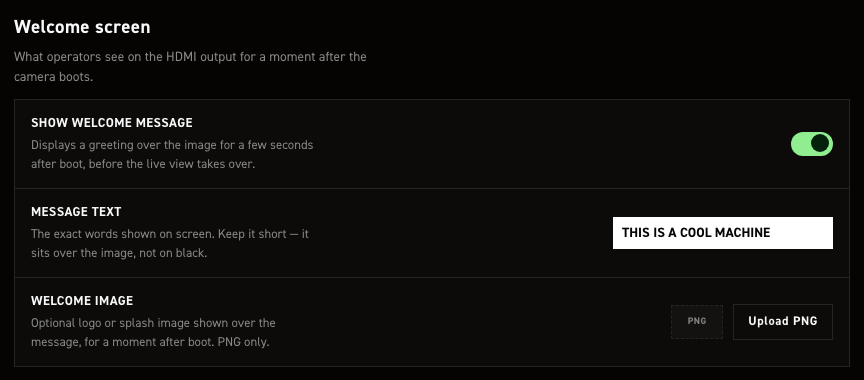
Greeting drawn on HDMI at startup, before the live view. Changes show at the next start, which saving triggers. With Plymouth running, CineMate waits for the spinner to hand off.
| Control | What it does |
|---|---|
| Show welcome message | Full-screen greeting, held at least three seconds. Default on. |
| Message text | Free text, default THIS IS A COOL MACHINE. One centred white-on-black line, no wrapping, so keep it short. |
| Welcome image | PNG instead of the text, stretched to fill the output, so match your monitor's aspect ratio. Upload PNG picks it, the bin icon clears it. PNG only. Default none. |
Picking a PNG only records its path
It sets system.welcome.image to resources/welcome/<filename>, relative to CineMate's working
directory: /home/pi/cinemate/resources/welcome/<filename> on the camera. Create that folder and
copy the PNG there over SSH; the page does not, and CineMate falls back to the text. By hand, any
absolute path and any format Pillow opens works.
These map to system.welcome.
Wi-Fi hotspot#
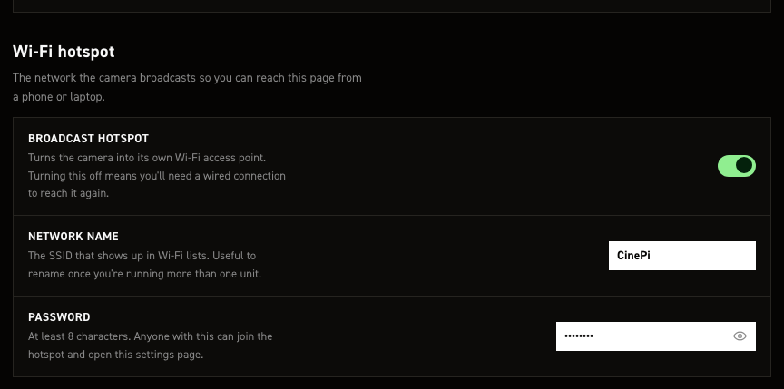
The camera broadcasts its own Wi‑Fi network, so you reach this page with no router. The toggle stops
only that broadcast; the Pi still joins your own network through raspi-config or the desktop tools.
| Control | What it does |
|---|---|
| Broadcast hotspot | Default on. Off applies from the next boot, so you can't strand yourself mid-session. Once down, only a wired link or a wlan0/eth0 that already had an IP at CineMate start reaches this page. |
| Network name | SSID shown to phones and laptops. Ships CinePi. Rename it when running more than one unit. |
| Password | Ships 11111111. 8-character minimum, unenforced here, so a shorter one saves silently. The eye button reveals it. Anyone with it can open this page. |
A password under 8 characters is thrown away
The field and settings.jsonc keep what you typed, but the service enforces NetworkManager's
8‑character minimum and comes up on the shipped 11111111 instead. The only trace is a line in
the service log. That shipped password is published here, so change it before treating the
hotspot as private.
wifi-hotspot.service re-reads name and password on a 60-second reconcile pass: live within a
minute, no reboot or restart. The access-point restart drops every hotspot client, including the
device you are editing from. Full behaviour: Wi-Fi hotspot.
These map to system.wifi_hotspot.
Cameras#
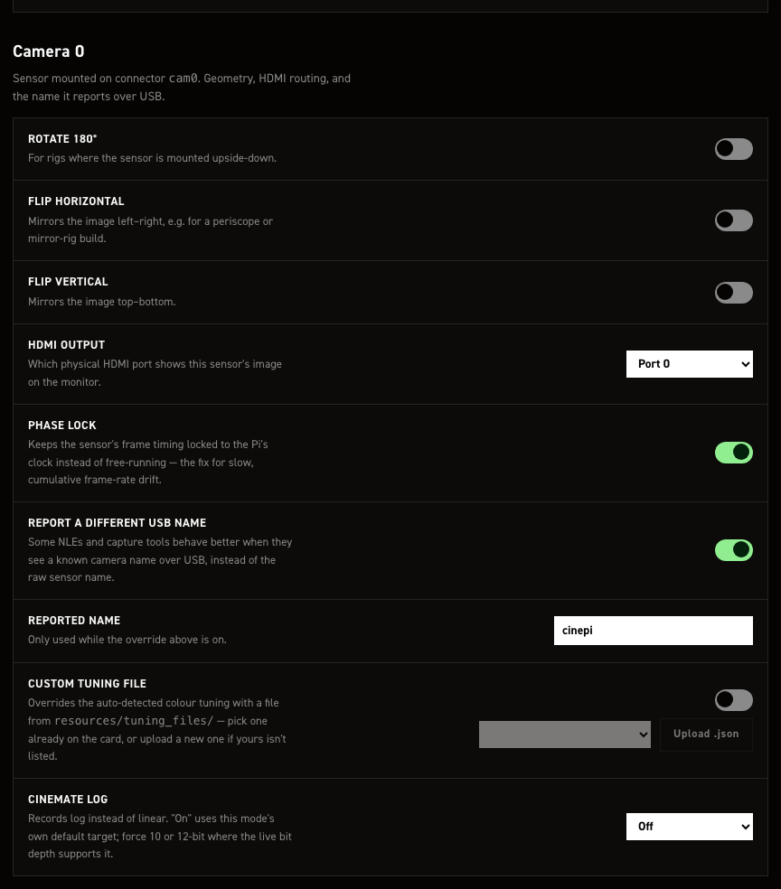
Per-sensor orientation, HDMI port, reported name and log. Camera 0 and Camera 1 are separate sections with independent values. Camera 1 drops the flip and name fields and adds the rig-wide record policy.
| Control | What it does |
|---|---|
| Rotate 180° | Preview and recorded frames upside-down, for an inverted mount. Default off. sensors.cam0.geometry.rotate_180 and the matching cam1 key. |
| Flip horizontal | Mirrors left–right, for periscope rigs. Default off. Camera 0 only. |
| Flip vertical | Mirrors top–bottom. Default off. Camera 0 only. |
| HDMI output | Port 0 = HDMI-A-1, Port 1 = HDMI-A-2. Camera 0 defaults to Port 0, Camera 1 to Port 1. |
| Phase lock | Locks recorded cadence to the Pi's clock instead of sensor free-run, stopping audio/video drift over long takes. Default on. Leave it on, genlocked rigs included. |
| Report a different USB name | Writes your own name into every DNG's UniqueCameraModel tag instead of the one cinepi-raw picks. Default on. Camera 0 only. |
| Reported name | Used when the toggle above is on. Ships cinepi. Camera 0 only. |
| Custom tuning file | Forces a colour tuning file instead of the auto-detected one. Default off; the picker lists resources/tuning_files/ (stock imx477.json). Ignored on a Pi 4, which gets none. |
| Upload .json | Points the setting at resources/tuning_files/<your file> and selects it. Put the file on the Pi over SSH first; the page does not copy it. Non-.json refused. |
| CineMate Log | Log instead of linear: smaller files, same grade. Default Off; On (mode default) uses the sensor mode's target, Force 10-bit / Force 12-bit pin it. imx585 and imx283 only. A target the live mode cannot reach records plain linear DNGs. Seeds at launch; a later set log wins. |
| Dual-sensor record policy | Camera 1 only, rig-wide. Follow preview (default): full-screen or pip-main records one sensor, side-by-side both. Always both records both every time. No effect with one sensor; rec cam0 / rec cam1 / rec both overrides one take. |
Reported name and Blackmagic
Resolve picks its decode pipeline from this name. Blackmagic Pocket Cinema Camera 4K unlocks
the full Camera RAW tab, ISO slider and colour science included. Never combine it with CineMate
Log; that colour science stacks on already-linearised data. Keep cinepi on any log camera.
HDMI port on a headless install
This sets only the connector CineMate uses once running. The boot screen needs its own matching
video=HDMI-A-1:1920x1080M@60D (or HDMI-A-2) in /boot/firmware/cmdline.txt.
A save from this page resets Camera 1's flip and name keys
sensors.cam1 also holds horizontal_flip, vertical_flip, override_camera_name and
camera_name, exposed here for Camera 0 only. The form never sends them, so a save rewrites them
to false, false, false, "" and values set over SSH are silently lost. Avoid saving here on
a rig that depends on them.
These map to sensors.cam0, sensors.cam1 and sensors.record_policy.
Timing & sync#
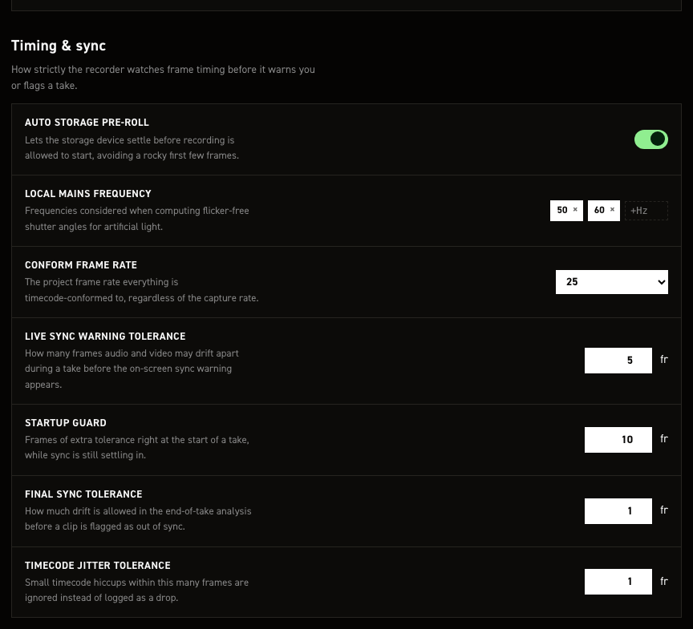
Frame-timing tolerances, the conform frame rate, and storage warm-up.
| Control | What it does |
|---|---|
| Auto storage pre-roll | Records and discards a short test clip at startup and on each storage mount, priming the card. Never becomes the "latest recording". Default on. Off skips only the automatic runs; CLI storage preroll still works (Storage pre-roll). |
| Local mains frequency | Frequencies used for flicker-free shutter angles. Ships 50 and 60. Enter adds a chip, × removes one, drag to reorder. |
| Conform frame rate | What everything is timecode-conformed to. 24, 25 or 30; default 25. |
| Live sync warning tolerance | Frames the recorded count may fall behind elapsed take time before the SYNC warning latches. Shortfall only; running ahead never latches. Default 5 frames. settings.sync_tolerances.live_sync_warning_frames. |
| Startup guard | Frames that must elapse after record starts before the live warning can latch, covering recorder startup latency. Default 10 frames, 400 ms at 25 fps. settings.sync_tolerances.live_sync_startup_guard_frames. |
| Final sync tolerance | How far end-of-take analysis lets frames on disk differ from expected, either direction, before flagging the clip out of sync. Default 1 frame, stricter than the live warning. settings.sync_tolerances.final_sync_analysis_frames. |
| Timecode jitter tolerance | Late-but-present frames within this many frames are ignored, not logged as a drop. Default 1 frame. settings.sync_tolerances.tc_drop_jitter_frames. |
Conform frame rate does not change what you shoot
The sensor records at the camera's own FPS. Conform sets only the timecode counter's frame base and the Playback pane's speed, so a take shot above it plays slow motion unless Use conform frame rate is off there. DNG timecode uses the actual capture rate.
These map to system.storage.auto_preroll, settings.conform_frame_rate, settings.light_hz and
settings.sync_tolerances.
Value steps#
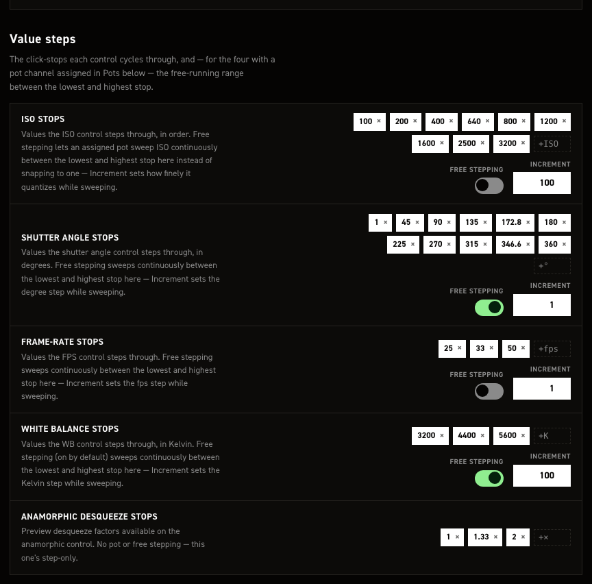
The click-stops each control cycles through. Enter adds a chip, × removes one. Numeric lists are held
lowest-first at all times, so inc/dec always walk them in order. ISO, shutter angle and frame rate
stop at the list ends; white balance and anamorphic wrap.
With free stepping on, the stops in between stop being what the control lands on, so they are dimmed and the two ends move to the right of the row joined by an arrow — the range the control now sweeps.
| Control | What it does |
|---|---|
| ISO stops | Default 100, 200, 400, 640, 800, 1200, 1600, 2500, 3200. |
| Free stepping (ISO stops) | Sweeps from the lowest stop to the highest in Increment steps, instead of landing on the stops. Default off. |
| Increment (ISO stops) | Free-step size. Default 100. |
| Shutter angle stops | Degrees. Default 1, 45, 90, 135, 172.8, 180, 225, 270, 315, 346.6, 360. |
| Free stepping (Shutter angle stops) | Sweeps from the lowest stop to the highest in Increment steps. Default on. |
| Increment (Shutter angle stops) | Free-step size. Default 1°. |
| Frame-rate stops | Default 25, 33, 50. |
| Free stepping (Frame-rate stops) | Sweeps from the lowest stop up to the sensor mode's fps_max in Increment steps. The list's own top entry does not raise that ceiling. Default off. |
| Increment (Frame-rate stops) | Free-step size. Default 1 fps. |
| White balance stops | Kelvin. Default 3200, 4400, 5600. |
| Free stepping (White balance stops) | Sweeps from the lowest stop to the highest in Increment steps. Default on. |
| Increment (White balance stops) | Free-step size. Default 100 K. |
| Anamorphic desqueeze stops | Preview desqueeze factors; above 1 widens the preview, recording untouched. Step-only, no pot or free stepping. Default 1, 1.33, 2. |
Free stepping drives pots, the quad encoders, the CLI inc/dec commands and the web GUI. Assign a
pot in Grove HAT potentiometers.
The list still sets the range when free stepping is on — its lowest and highest entries are the ends of the sweep, so editing them moves what the control can reach. The stops in between stop mattering, which is why the editor mutes them and leaves the two ends lit. Empty the list entirely and the parameter falls back to its own full range.
The swept range is fixed per parameter, not your chips, whatever the card text says. Only the increment is yours.
| Control | Free range |
|---|---|
| ISO | 100–3200 |
| Shutter angle | 1–360° |
| Frame rate | 1 fps to fps_max (sensor max for the mode, truncated: 49.97 gives 49) |
| White balance | 2800–6500 K |
Two lists get edited behind your back
Flicker-free angles for light_hz (Local mains frequency, Timing & sync) are added to the
shutter angle stops on every fps change and the list re-sorted, so angles you never typed appear.
Frame-rate stops above the sensor mode's ceiling are dropped and the sensor maximum offered
instead, so the stock 50 fps stop is not reachable in every mode.
These map to arrays.iso, arrays.shutter_a, arrays.fps, arrays.wb and
hdmi_display.preview.anamorphic.steps.
Grove HAT potentiometers#
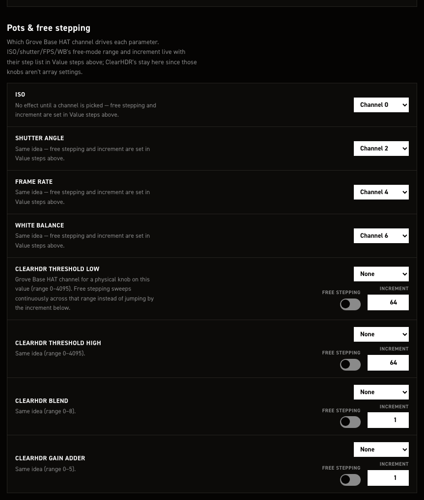
Assign a Grove Base HAT ADC channel to each parameter you want on a dial. ISO, shutter angle, frame rate and white balance set their free stepping in Value steps. Only assign channels with a pot wired: noise on an empty connector drifts the parameter on its own.
| Control | What it does |
|---|---|
| ISO | Grove Base HAT channel: None, or Channel 0–Channel 7. Opens on Channel 0, ships None. |
| Shutter angle | Same; opens on Channel 2, ships None. |
| Frame rate | Same; opens on Channel 4, ships None. |
| White balance | Same; opens on Channel 6, ships None. |
| ClearHDR threshold low | Channel; range 0–4095. Ships None. |
| — Free stepping | On: whole 0–4095 range by the increment. Off (default): the stops in arrays.hdr_threshold_low.steps. |
| — Increment | Shows 64; ships 16. |
| ClearHDR threshold high | Channel; range 0–4095. Ships None. |
| — Free stepping | Same, 0–4095. Default off. |
| — Increment | Shows 64; ships 16. |
| ClearHDR blend | Channel; range 0–8. Ships None. |
| — Free stepping | Same, 0–8. Default off. |
| — Increment | Shows 1, which also ships. |
| ClearHDR gain adder | Channel; range 0–5. Ships None. |
| — Free stepping | Same, 0–5. Default off. |
| — Increment | Shows 1, which also ships. |
Set the channels by hand
The dropdowns are display-only: they ignore settings.jsonc, hence the Channel 0/2/4/6
openers, and saving replaces input_peripherals.pots with an empty list. Edit that list over
SSH, and re-check it after every save here.
ClearHDR free stepping does not take effect either
The toggles and increments save to image_capture.hdr.threshold_low_free, …_free_increment,
blend_free, gain_adder_free, keys CineMate never reads. It reads
arrays.hdr_threshold_low.free / free_increment and the three matching blocks, which have no
control here, so the toggles show off and the increments 64/64/1/1 whatever your file
holds. Set them in arrays over SSH.
These map to input_peripherals.pots and (nominally) image_capture.hdr; the free-stepping values
CineMate reads live in arrays.
Resolution & sensor#
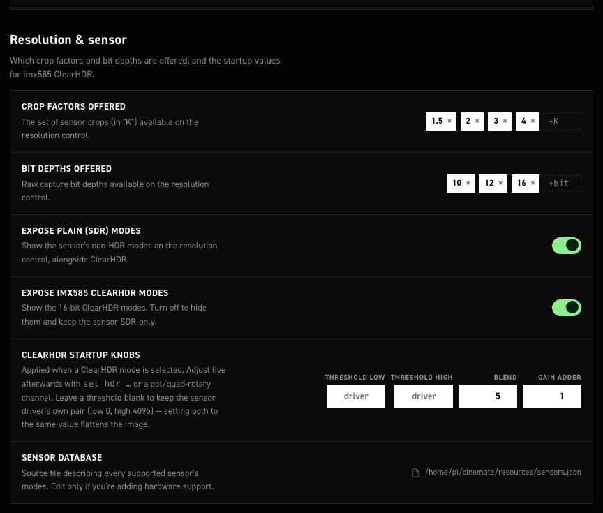
Filters which sensor modes reach the camera's resolution control, and sets the startup values for imx585 ClearHDR.
| Control | What it does |
|---|---|
| Resolutions offered | Which sizes appear, as "K" categories. Modes group to the nearest half-K by width, so 1332×990 is 1.5 K. One switch per category — 1.5, 2, 3, 4 on by default, 5.5 (the imx283's 5568-wide modes) off. Those five are every category the sensor database can produce, so the switches are the whole catalogue. |
| Bit depths offered | Which raw depths appear. Switches for 10, 12 and 16, all on by default. 16 covers the imx585 16-bit ClearHDR modes. |
| Dynamic resolution | Startup default for the automatic FPS-driven mode substitution described under Dynamic resolution. On by default. set dynamic resolution overrides it live, and that override outlives a reboot. |
| Dynamic resolution priority | Which axis of quality that substitution gives up first once the selected mode's own class runs out -- mode (hold bit depth + ClearHDR, drop resolution), resolution (hold frame size, drop class) or none (never leave the class). mode by default; see Priority. set dynamic resolution priority overrides it live, and that override outlives a reboot. |
| Expose plain (SDR) modes | Shows the sensor's non-HDR modes alongside ClearHDR. Default on; off leaves only ClearHDR. |
| Expose 12-bit ClearHDR modes | Offers the companded ClearHDR capture — cinepi-raw applies the CCMP decompand to it, and the preview needs a measured table for the mode's binning. Default on. |
| Expose 16-bit ClearHDR modes | Offers the linear ClearHDR capture, with no compander in the path. Default on. Turn both off to keep the sensor SDR-only. |
| ClearHDR startup knobs | The four fields below, applied whenever a ClearHDR mode is selected. |
| Threshold low | Raw level below which the sensor reads pure high-gain. Range 0–4095. Blank by default (field reads driver), keeping the driver's 0. |
| Threshold high | Raw level above which it reads pure low-gain. Range 0–4095. Blank by default (field reads driver), keeping the driver's 4095. |
| Blend | High-gain / low-gain mix in the transition zone, as a driver menu number. Range 0–8, default 5 (HG 1/16 + LG 15/16). HG-heavier is cleaner in the transition tones; LG-heavier holds highlights longer, with more grain. |
| Gain adder | Digital gain on the merge's low-gain path. Range 0–5, default 1 (+6 dB, quieter than the driver's +12 dB). Higher brightens highlights and adds grain; lower leaves them darker, to lift in the grade. |
| Sensor database | Read-only path of the file describing every sensor's modes, resources/sensors.json by default, shown in full for this Pi. Only relevant when adding hardware support. |
Set both thresholds, or neither
Both blank keeps the driver's own pair. Setting the two to the same value clamps every HDR frame near black. Never set just one of the pair.
Why the ClearHDR depths are not just Bit depths offered
Bit depths offered is global: it applies to every mode. On an IMX585 every SDR mode is 12-bit, so switching 12 off there to drop 12-bit ClearHDR would take all of them with it. The two switches above ask the other question — which ClearHDR captures to offer — and that is the only one that can tell 12-bit ClearHDR from 12-bit SDR.
A settings.jsonc written before the split carries a single imx585_clear_hdr. It is
still honoured, as the default for both: one that turned ClearHDR off keeps both depths
off.
These are filters, not the mode list
Resolutions and bit depths only decide which database modes get shown, and both lists are global: every sensor, not per camera. Hidden modes come straight back when you switch the category on again — 5.5K brings the IMX283 5K modes back.
All-off is not a ban. Turn every switch in one of these sets off, or turn both mode toggles off, and that filter stops applying, so every mode is offered. If a combination leaves a camera with nothing, CineMate logs a warning and keeps that camera's full mode list.
Greyed rows
A row the attached sensor has no mode for is dimmed — 1.5K, 3K, 5.5K and 10-bit on an IMX585, for instance. Dimmed, not disabled: the switch still flips, still saves and applies the moment a sensor that has those modes is fitted, the same way the Grove HAT's channel assignments survive the HAT being unplugged. With no camera detected at all, nothing is dimmed.
Per-mode fps ceilings#
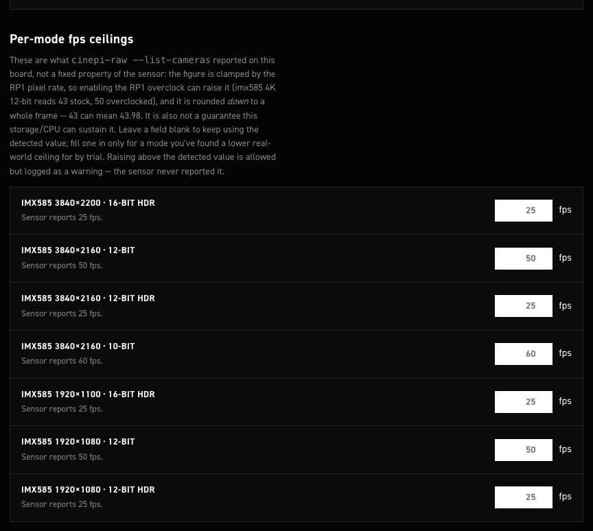
Caps the frame rate offered for one sensor mode, for when a trial recording shows that mode dropping frames.
| Control | What it does |
|---|---|
| Mode row label, e.g. imx585 3856×2180 · 12-bit | One row per mode detected at last start: sensor, resolution, bit depth, HDR on ClearHDR. Modes the Resolution & sensor whitelists exclude get none. Its "Sensor reports N fps." is the pre-override ceiling --list-cameras found on this board. |
| fps field | Overrides that ceiling. Blank, cleared, or the detected number means no override; the greyed value is that detected figure. Min 0, no max, decimals accepted, and the working ceiling rounds down to whole frames. |
Save changes restarts CineMate, which applies the ceiling; Boot config then shows
N (capped from M).
Entries for absent cameras survive
A custom_modes entry with no row here (a camera that isn't attached) is left untouched.
Lower, not higher
A ceiling above the reported figure saves but logs a warning; the sensor never claimed that rate.
The detected figure is not fixed
--list-cameras reports it per board, clamped by the RP1 pixel rate. The overclock raises it
(imx585 4K 12-bit: 43 stock, 50 overclocked), and it rounds down, so 43 can mean 43.98. It says
nothing about what storage and CPU sustain; only a trial recording finds that.
No rows means no sensor modes detected. Reconnect the camera and check cinepi-raw --list-cameras.
These map to image_capture.custom_modes, listed under
image_capture.
Audio#
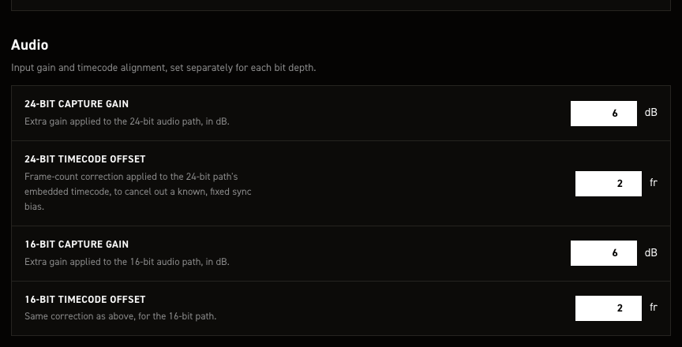
Mic input level and WAV timecode alignment. CineMate probes the USB mic: 24bit values for 24-bit
stereo capture, 16bit for 16-bit mono. Read at startup, so a change needs a save & restart.
| Control | What it does |
|---|---|
| 24-bit capture gain | In dB. 0 unity, positive boosts, negative cuts. Default 6, step 0.5, no min/max enforced. |
| 24-bit timecode offset | Shifts the timecode in the WAV, in whole frames. Positive later, negative earlier. Default 2. |
| 16-bit capture gain | Same, 16-bit path. Default 6, step 0.5. |
| 16-bit timecode offset | Same, 16-bit takes. Default 2. |
Gain goes over ALSA with amixer at mic detection. Mics with fixed hardware gain expose no
writable capture control, so it never lands, only a log warning. The 16-bit value also goes to
Redis: cinepi-raw re-encodes the finished WAV with it after any non-zero 16-bit take, so a
16-bit mic that does take the ALSA gain is boosted twice.
An offset moves only the timecode metadata, written when the WAV is finalised; samples are never shifted. Use it for a fixed bias, not drift over a long take, see Audio recording.
These map to audio_capture.
HDMI & preview#
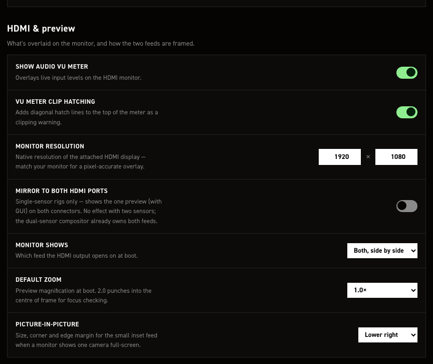
Overlays on the HDMI monitor, and how the feed is framed at boot.
| Control | What it does |
|---|---|
| Show audio VU meter | Mislabelled: toggles the RAM buffer bar, lower left. Green under 70% full, yellow under 90%, red above. Default on. The right-edge audio VU meters are separate and appear with any supported USB mic. hdmi_display.overlays.buffer_vu_meter. |
| VU meter clip hatching | Hatch lines across the buffer bar's filled part. Default on. Only visible while that bar is shown. hdmi_display.overlays.vu_meter_hatch_lines. |
| Monitor resolution | GUI canvas size; match your monitor for a pixel-accurate overlay. Default 1920 × 1080. A smaller framebuffer wins: CineMate uses it instead of clipping the layout. |
| Mirror to both HDMI ports | One preview, GUI included, on both connectors. Default off. Single-sensor only; with two sensors the compositor owns both feeds. hdmi_display.mirror_to_both_ports. |
| Monitor shows | Boot feed: Camera 0, Camera 1, or Both, side by side. Default Both, side by side. Needs two sensors. |
| Default zoom | Boot magnification, 1.0× or 2.0×; 2.0× punches into frame centre for focus. Default 1.0×. Preview only, never the recording. |
| Picture-in-picture | Corner for the inset when one camera is full-screen: Upper left, Upper right, Lower left, Lower right. Default Lower right. Needs two sensors. hdmi_display.preview.pip.corner, written as upper_left, upper_right, lower_left or lower_right. |
The dropdown doesn't offer picture-in-picture
Enter pip on the running camera with set preview pip_cam0 / pip_cam1; the corner above is
where the inset lands. hdmi_display.preview.default_hdmi_source takes those as boot values too.
See Dual sensors.
These map to hdmi_display.
GPIO in#
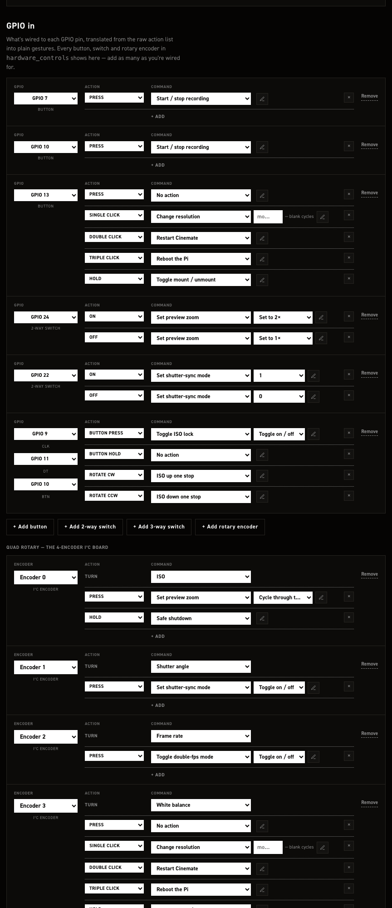
Every physical control wired to the Pi's GPIO header, plus the Adafruit quad rotary i²c board. One row per control: its pin, then one or more gesture → command lines. A button can carry a press, single, double and triple click, and a hold, each running a different command.
The stock image ships six controls (two record buttons, a multi-gesture button, two switches and a
rotary encoder) and the four dials of the quad rotary board. The GPIO encoder and the quad board each
carry an enabled flag, both true as shipped; set either to false to keep the mapping on file
while switching the device off. Creating a control, choosing its command and argument, and moving it
to another pin are covered in Additional hardware.
These map to hardware_controls and input_peripherals.
GPIO out#
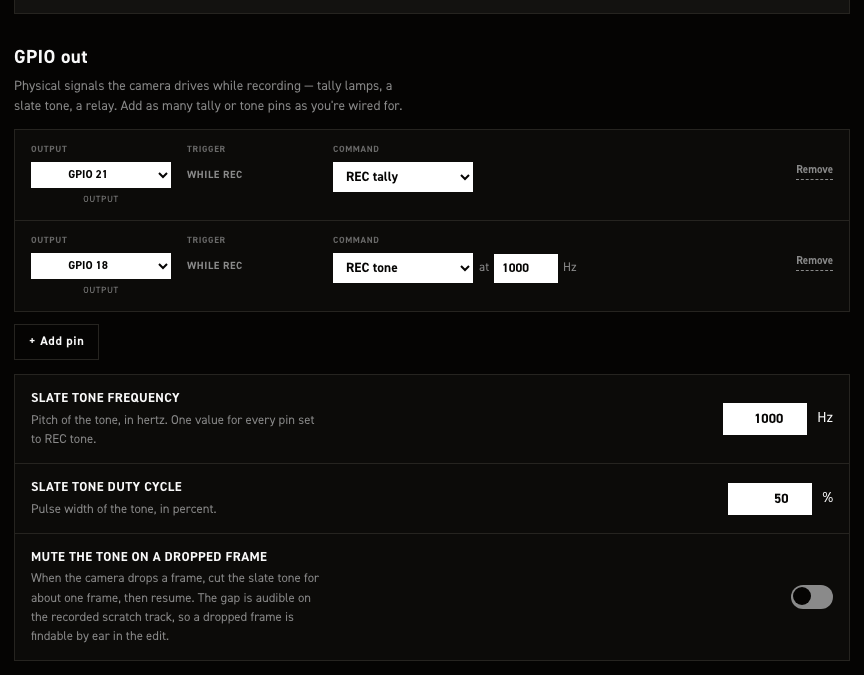
Pins driven while recording: tally lamp, relay, or a sync tone for the scratch track. One row per pin; the trigger is always While rec.
| Control | What it does |
|---|---|
| + Add pin | New row: REC tally, no pin. |
| Output | The row's pin, or None (dropped on save). Pins in use read "GPIO n — in use (…)" and are unselectable; a move asks to confirm. Ships GPIO 21 tally, GPIO 18 tone. |
| Command | REC tally pulls the pin high for an LED or relay; REC tone puts a PWM sync beep on it for a recorder input. |
| at … Hz | Tone pitch on REC tone rows. The only place it is edited; all REC tone pins share it. 1–20000, default 1000. |
| Remove | Deletes the row after a confirmation; gone from the file on save. |
| Mute the tone on a dropped frame | Mutes the tone for about a frame on a drop. Default off; the gap makes drops findable by ear. |
GPIO 18 and 19 have hardware PWM and a steadier pitch; other pins fall back to software. GPIO 18 is reserved for the slate tone, so the row shipped on it keeps it and nothing else may move there. Use GPIO 19 for a second tone pin.
Slate tone settings appear only with a REC tone pin. The tone follows the record command: on at the request, before any frame is written, off at stop, muted during storage pre-roll. Tally pins wait for frames on the card instead. Rows regroup on each page load, tally before tone.
These map to hardware_outputs.rec_out_pin and hardware_outputs.rec_tone (pin, frequency_hz,
duty_cycle, relay_drop_frames).
OLED status display#
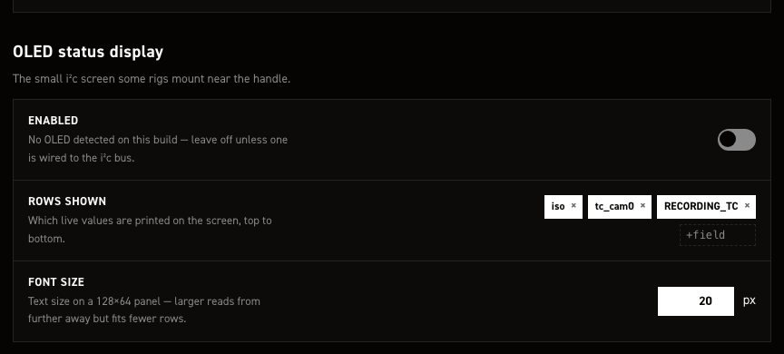
Drives the optional 128×64 i²c OLED panel.
| Control | What it does |
|---|---|
| Enabled | Default off. The help line always reads "No OLED detected on this build": fixed text, not a live i²c probe. |
| Rows shown | Live values printed top to bottom, as chips. Type a field name in +field and Enter to add, × to remove, drag to reorder. Default iso, tc_cam0, RECORDING_TC. |
| Font size | Pixels. Default 20, no range enforced; larger reads further away but fits fewer rows on 128×64. |
Row fields are Redis keys plus a few pseudo-keys. Formatted ones: shutter_a→SHUTTER °,
wb_user→WB K, space_left→SPACE GB, resolution→1920x1080@12Bit, is_recording→●
while recording, cpu_load→CPU, cpu_temp→TEMP, memory_usage→RAM; tc_cam0 and
RECORDING_TC print the value only. Any other key (iso, fps, write_speed_to_drive) prints
its name in capitals plus the raw value, so a typo shows as TYPO: N/A. is_recording and
resolution always hoist onto the top line together, whatever the chip order.
width and height have no control here and survive no save: hand-set values are rewritten to
128 and 64 on the next Save changes.
Saving restarts CineMate; the OLED is set up at startup, so changes come up on the next run.
These map to output_peripherals.oled, listed under
output_peripherals.
Restart and log output#
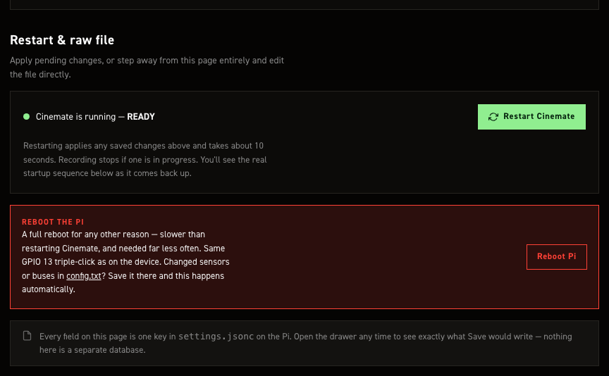
Applies changes you already saved, and shows CineMate's live log.
| Control | What it does |
|---|---|
| CineMate is running — READY | Fixed coloured-dot label, not a live health check: always READY, except "Restarting CineMate — please wait" during the animation. |
| Restart CineMate | Real restart. Sends restart cinemate to the page API, the same dispatcher entry as the CLI and the default GPIO 13 double-click. systemd restarts cinemate-autostart, ~10 s per the page. Recording stops, page unresponsive until the service returns. On failure: "Restart failed" toast, nothing restarted. |
| Log console | A live tail of system.log, streamed over server-sent events and coloured with the same per-module and per-level palette the CineMate CLI uses. Always running, not only during a restart; a restart does not clear it, since the lines explaining why you restarted are usually the ones you want. Shows when the camera answers again after a restart. |
| Reboot Pi | Real reboot, and only a reboot: it sends the reboot command through the same dispatcher as the CLI and the GPIO 13 triple-click, and does not write config.txt — unsaved edits on Boot config are left where they are. Recording stops first. The console reports the Pi answering again; allow about 25 seconds. On failure: "Reboot failed" toast, nothing rebooted. |
An older install may refuse to reboot itself
CineMate runs as pi, so rebooting needs a sudoers grant — and until this release its
drop-in never had one. On a Pi whose distro NOPASSWD rule is still in place nothing
changes; where it had been removed, every reboot path failed silently. Re-run
cinemate-install.sh to add the grant. Both buttons now say so instead of animating a
reboot that will not happen.
config.txt reboots itself
Saving on Boot config (sensors, buses, RP1 overclock) reboots the Pi by itself, no Reboot Pi button needed.
Raw-file controls sit in the top bar, on this page and Boot config only.
| Control | What it does |
|---|---|
| settings.jsonc | Drawer on the raw file, with a Copy button. Label follows the page (config.txt on Boot config), but the drawer always has both tabs. The view is the form state as plain JSON: what Save would write, minus the comments. |
| Revert | Loads the stock shipped defaults (stock config.txt defaults on Boot config). Nothing is written until Save changes. |
| Download | Saves the form state to your computer: settings.jsonc, or config.txt on Boot config. Same comment-free JSON as the drawer. |
| Upload | Loads a .json, .jsonc or .txt file into the form; parsed on the Pi, rejected if it does not parse. Nothing is written until Save changes. |
The drawer shows unsaved edits too
Drawer and Download reflect the form as it stands, unsaved edits included. The unsaved counter counts fields differing from what was loaded off the Pi; after a Revert or Upload it reads 1, and it is hidden on Boot config, where Save changes enables on any edit.
This section writes no keys of its own. It applies what the rest of the page saved into
settings.jsonc.
Settings with no field on this page#
Edit these by hand, or leave them at the defaults.
| Key | What it does |
|---|---|
system.web_api.* |
Wireless control API: on/off, token, rate limits, UDP status broadcast. Web API. |
system.recovery.* |
Recovery console on port 8080; whether it may edit config.txt. Recovery console. |
system.https.enabled |
Web UI over TLS. Off by default. Self-signed cert, so a browser warning; needed for a secure context, which the RAW pane's folder download requires. |
system.https.cert_file / key_file |
Certificate pair path. Relative paths resolve from the repo root; both git-ignored, key 0600. |
system.https.valid_days |
Certificate lifetime, default 3650. Expired ones are re-issued at next start. |
system.storage.recognized_ssds |
Recognised SSD identifiers. Empty by default. |
sensors.raw_buffer_count |
Frames cinepi-raw buffers in RAM against write bursts. Leave at 0; the active storage profile sets the depth. |
sensors.cam1.camera_name · override_camera_name · geometry.horizontal_flip · geometry.vertical_flip |
Camera 1 has fewer page fields than Camera 0; set these by hand for a second sensor. |
arrays.hdr_threshold_low · hdr_threshold_high · hdr_blend · hdr_gain_adder |
Click-stop tables (steps, free, free_increment) a pot or encoder steps through. Startup values: Resolution & sensor. |
arrays.shutter_a.sync_increment |
Granularity in shutter-angle sync mode only. Default 0.1°, independent of the shutter angle's own free increment. |
image_capture.hdr.self_heal |
Auto-recovery for the flat-pedestal ClearHDR startup defect. Off by default, details. |
hdmi_display.preview.zoom_steps |
Zoom factors set zoom cycles through. Default 1.0, 1.5, 2.0; Default zoom offers only 1.0 and 2.0. |
hdmi_display.preview.pip.scale / pip.margin |
PiP inset size and edge gap, as fractions of the pane. Defaults 0.28 and 0.03. |
hdmi_display.preview.anamorphic.default_factor |
Desqueeze factor at startup, default 1.0; the factor list is on the page, under Value steps. |
output_peripherals.oled.width / height |
OLED panel pixels. Defaults 128 × 64. |
Editing the file directly#
On the camera:
editsettings
That opens /home/pi/cinemate/settings.jsonc in nano with syntax colouring. Without the alias:
sudo nano /home/pi/cinemate/settings.jsonc
The format is JSONC: JSON with // and /* */ comments and trailing commas allowed. The shipped
file annotates the trickier keys in place.
Restart CineMate to apply a hand edit: type cinemate in an SSH session, or use Restart CineMate
on the page. A reboot is only for config.txt.
Saving from the settings editor keeps a timestamped copy of the previous file in
.settings-backups/ next to settings.jsonc (last 10). A hand edit does not, so make your own
copy first.